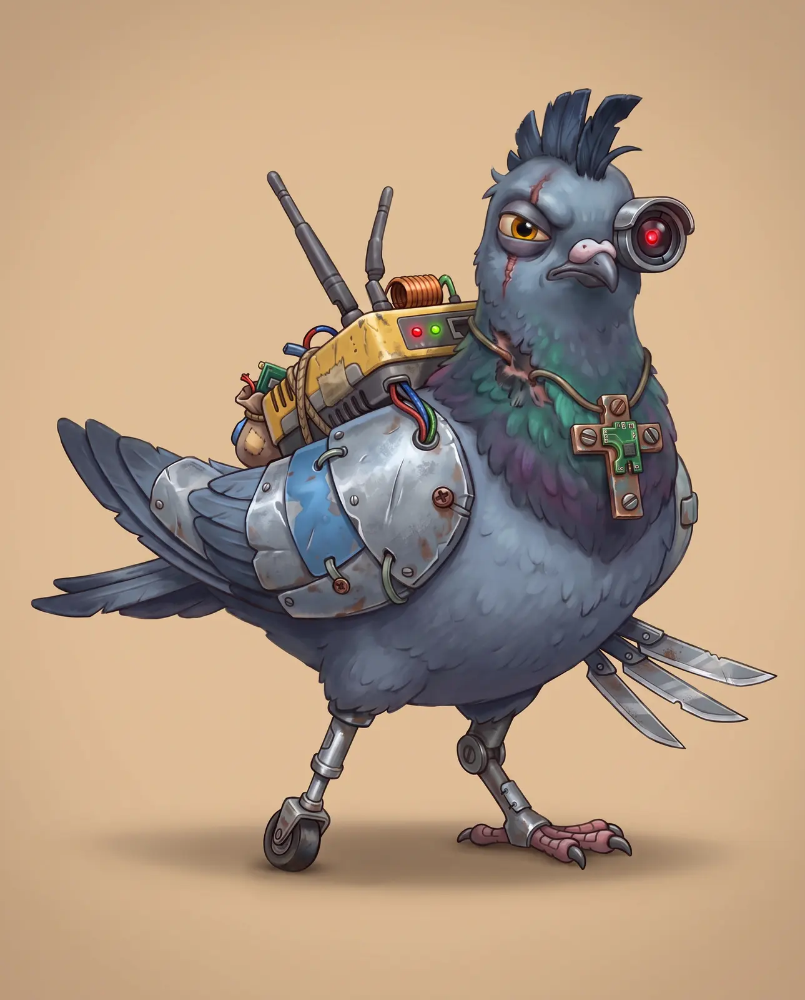
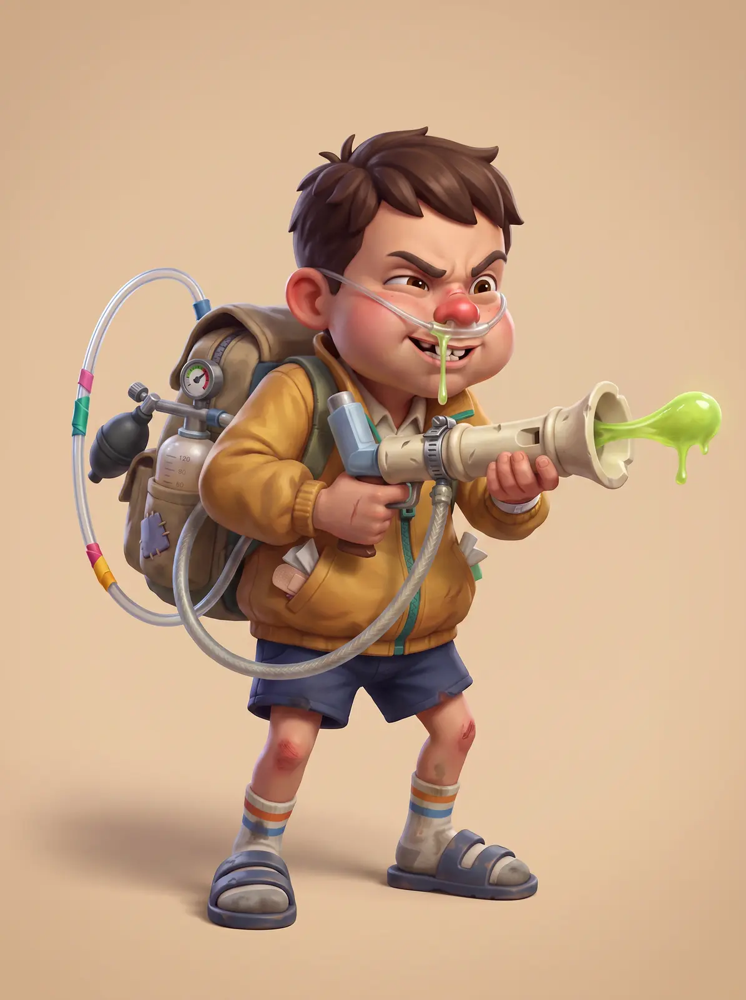

O coração criativo do jogo
Fantasia do improviso.
Três personagens em produção. Um universo em construção. Uma régua de craft para unir o elenco.
 DONA CHINELA3 de 5 etapas aprovadas
DONA CHINELA3 de 5 etapas aprovadas
P.O.M.B.O.0 de 5 etapas aprovadas
CATARINO0 de 5 etapas aprovadasO que vem agora
A existência de um asset não significa aprovação. Os dois masters precisam fechar antes de refazer as etapas derivadas.
- ART-01Agora
Fechar o master 3D do P.O.M.B.O.
Preservar peito estufado, moicano, crucifixo, olho óptico e roteador; elevar volume, luz e materiais à régua da Dona Chinela.
- ART-02Agora
Fechar o master 3D do Catarino
Preservar rosto, catarro e mecanismo da mochila/flauta-canhão; resolver profundidade, pele, tecido e equipamento.
Universo
A Várzea do Fim
Realidades quebradas, costuradas pelo Nexus. O cotidiano ganha escala épica, e toda gambiarra pode virar lenda.
Abrir o universoCRIAÇÃO E JOGO
Uma identidade nova.
Uma base mecânica existente.
O jogo já tem 20 heróis jogáveis. Os três deste guia pertencem à trilha criativa; a integração ainda depende de validação.